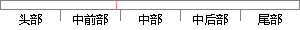

其数据是通过加速度传感器和磁场传感器共同获得的。
片段位置图

相似结果|
相似片段 1： diagramAndroid 手机中的方向传感器是基于软件的，并且它的数据是通过加速度传感器和磁场传感器共同获得。首先需要根据磁场数据和加速度数据计算旋转矩阵 R。AndroidAPI 定义了函数
相似片段 2：方向传感器是Android平台提供的用于判别设备位置的传感器之一，事实上，磁场传感器属于硬件传感器，方向传感器属于软件传感器，其数据是通过加速度传感器和磁场传感器共同获得的，通过方向传感器获取的数据
相似片段 3：数据和磁场数据进行推导。33一X+y+X—y图4-6智能手机加速度方向使用Android系统的传感器，首先需要获取系统的传感器管理对象SensorManager，然后通过SensorManager和
相似片段 4：的传感器，磁场传感器根据霍尔效应，将周围变化的磁场转化为变化的输出电压，再通过一系列计算，还原回磁场的变化情况，这种传感器目前在科学研究和商业上被大量使用。智能移动终端的传感器设备，通过加速度传感器、陀螺仪和磁场传感器分别传送加速度、角速度和绝对方向等大量瞬时运动数据。
|
※ 片段修改建议 ※
近似词参考：- 通过：经由过程
- 共同：配合
- 获得：取得 得到 获取
系统自动生成语句：其数据是经由过程加速度传感器和磁场传感器配合取得的。
注：本片段修改建议为系统自动生成，仅供参考。